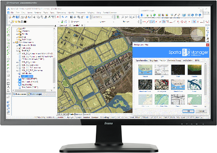

Because Smart is the New Sexy
Spatial Manager™ for BricsCAD is a powerful BricsCAD plug-in to import, export and manage spatial data in a simple, fast and inexpensive way.
TRY IT FOR FREESpatial Manager™ for BricsCAD is a powerful BricsCAD plug-in to import, export and manage spatial data in a simple, fast and inexpensive way.
TRY IT FOR FREE